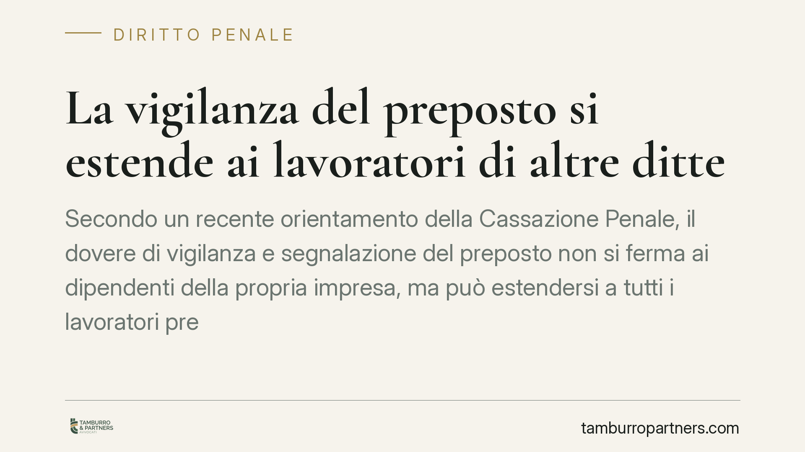

La vigilanza del preposto si estende ai lavoratori di altre ditte
Secondo un recente orientamento della Cassazione Penale, il dovere di vigilanza e segnalazione del preposto non si ferma ai dipendenti della propria impresa, ma può estendersi a tutti i lavoratori presenti nel cantiere. Un principio che pesa sulla responsabilità penale in caso di infortunio e che impone attenzione al coordinamento tra imprese.

Il caso
Un infortunio in cantiere riconducibile a un pericolo occulto — una fonte di rischio non immediatamente percepibile — ha riportato all'attenzione una domanda ricorrente: fino a dove arriva il dovere di vigilanza del preposto?
In un recente orientamento, la Cassazione Penale ha confermato una condanna muovendo da un presupposto chiaro: chi esercita in concreto funzioni di sorveglianza deve attivarsi di fronte alle condizioni di pericolo che rileva, a prescindere dall'impresa cui appartiene il lavoratore esposto.
> Nota: il numero e l'anno della pronuncia richiamata nella fonte non risultano al momento verificabili con certezza. In attesa di conferma degli estremi, l'analisi che segue poggia sulle norme vigenti e sull'orientamento consolidato in materia, non su una singola sentenza non riscontrata.
Inquadramento normativo
L'art. 19 del D.lgs. 81/2008 definisce gli obblighi del preposto. Tra questi, la vigilanza sull'osservanza delle misure di sicurezza e il dovere di segnalare al datore di lavoro o al dirigente le deficienze riscontrate, incluse — secondo la lettera f) del comma 1 — le situazioni riconducibili a "ogni altra condizione di pericolo".
La norma, da sola, non afferma espressamente che la vigilanza si estenda ai dipendenti altrui. L'estensione discende piuttosto dal principio di effettività sancito dall'art. 299 del medesimo decreto: chi esercita in concreto i poteri tipici del preposto ne assume la posizione di garanzia, indipendentemente da investitura formale. È una posizione di garanzia a natura funzionale, legata al ruolo svolto e non all'organigramma aziendale.
Su questa base, il pericolo rilevato in un ambiente condiviso riguarda chiunque vi sia esposto. Il preposto che lo percepisce e non segnala o non interviene risponde delle conseguenze, anche quando il lavoratore infortunato appartiene a un'altra impresa operante nel medesimo cantiere.
Implicazioni pratiche
Il tema si intreccia con il coordinamento tra imprese. Nei contratti d'appalto l'art. 26 del D.lgs. 81/2008 impone la cooperazione e il coordinamento delle misure di prevenzione e, in presenza di rischi da interferenza, la redazione del DUVRI (Documento Unico di Valutazione dei Rischi da Interferenze).
Nei cantieri temporanei o mobili si applica il Titolo IV: qui operano il Coordinatore per l'esecuzione (CSE), il Piano di Sicurezza e Coordinamento (PSC, art. 100) e il Piano Operativo di Sicurezza di ciascuna impresa (POS, art. 96). In questo assetto, la compresenza di più ditte è la regola e la vigilanza di fatto sfora inevitabilmente i confini aziendali.
Per chi riveste il ruolo di preposto, il messaggio è diretto: la segnalazione di un pericolo riscontrato non è una facoltà discrezionale legata all'appartenenza del lavoratore esposto, ma un obbligo. L'omissione può tradursi in responsabilità penale per lesioni o omicidio colposo, con l'aggravante della violazione delle norme antinfortunistiche.
Per le imprese, l'implicazione è organizzativa: i ruoli vanno definiti con chiarezza prima dell'avvio dei lavori, perché la responsabilità segue l'esercizio effettivo dei poteri, non la sola etichetta formale.
Cosa fare in concreto
- Formalizzare le nomine. Individuare per iscritto preposti e relative aree di competenza, coerentemente con l'operatività reale, per evitare l'attribuzione di posizioni di garanzia "di fatto" non presidiate.
- Verificare il coordinamento. Controllare che DUVRI (art. 26) o, nei cantieri, PSC e POS (artt. 96 e 100) disciplinino effettivamente i rischi da interferenza tra le imprese presenti.
- Aggiornare il DVR. Mantenere coerente il Documento di Valutazione dei Rischi (artt. 28-29) con le lavorazioni in corso e con le compresenze prevedibili.
- Formare i preposti. Assicurare che conoscano il dovere di segnalazione e vigilanza anche verso lavoratori di altre ditte, documentando la formazione erogata.
- Tracciare le segnalazioni. Predisporre un canale documentabile per le segnalazioni di pericolo al datore di lavoro o al dirigente: la prova dell'adempimento è decisiva in sede penale.
In presenza di un procedimento o di un infortunio con profili di responsabilità, è opportuno un esame tempestivo degli atti e della concreta ripartizione dei ruoli al momento del fatto.
Disclaimer
Contributo informativo a cura di Tamburro & Partners - Avv. Giuseppe Tamburro. Non costituisce parere legale.
Ogni condominio ha una storia a sé.
Se gestisci un'amministrazione e vuoi un confronto su una specifica questione condominiale, scrivi allo studio. Ti rispondiamo entro un giorno lavorativo.